16. pglogical
pglogical is a PostgreSQL extension that provides an advanced logical replication system that serves as a highly efficient method of replicating data as an alternative to physical replication.
In this chapter, we will use a 2-node cluster to demonstrate pglogical with PostgreSQL 10. Note that on each PostgreSQL instance, you need to configure:
wal_level = 'logical'
track_commit_timestamp = on
max_worker_processes = 10 # one per database needed on provider node
# one per node needed on subscriber node
max_replication_slots = 10 # one per node needed on provider node
max_wal_senders = 10 # one per node needed on provider node
shared_preload_libraries = 'pglogical'
Also make sure to adjust file pg_hba.conf to grant access to replication
between the 2 nodes.
Creating a test environment
OmniDB repository provides a 2-node Vagrant test environment. If you want to use it, please do the following:
git clone --depth 1 https://github.com/OmniDB/OmniDB
cd OmniDB/OmniDB_app/tests/vagrant/pglogical-2-postgresql-10-2nodes/
vagrant up
It will take a while, but once finished, 2 virtual machines with IP addresses
10.33.3.114 and 10.33.3.115 will be up and each of them will have PostgreSQL
10 listening to port 5432, with all settings needed to configure pglogical
replication. A new database called omnidb_tests is also created on
both machines. To connect, user is omnidb and password is omnidb.
Install OmniDB pglogical plugin
OmniDB core does not support pglogical by default. You will need to download and install pglogical plugin. If you are using OmniDB server, these are the steps:
wget https://omnidb.org/dist/plugins/omnidb-pglogical_1.0.0.zip
unzip omnidb-pglogical_1.0.0.zip
sudo cp -r plugins/ static/ /opt/omnidb-server/OmniDB_app/
sudo systemctl restart omnidb
And then refresh the OmniDB web page in the browser.
For OmniDB app, these are the steps:
wget https://omnidb.org/dist/plugins/omnidb-pglogical_1.0.0.zip
unzip omnidb-pglogical_1.0.0.zip
sudo cp -r plugins/ static/ /opt/omnidb-app/resources/app/omnidb-server/OmniDB_app/
And then restart OmniDB app.
If everything worked correctly, by clicking on the "plugins" icon in the top right corner, you will see the plugin installed and enabled:
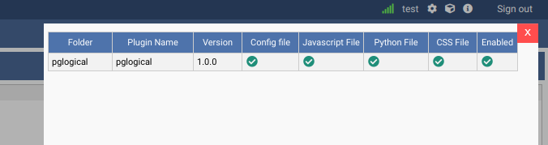
Connecting to both nodes
Let's use OmniDB to connect to both PostgreSQL nodes. First of all, fill out connection info in the connection grid:
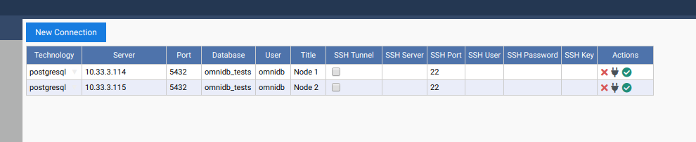
Then select both connections.
Create pglogical extension in both nodes
pglogical requires an extension to be installed in both nodes. Inside OmniDB,
you can create the extension by right clicking on the Extensions node, and
choosing the action Create Extension. OmniDB will open a SQL template tab with
the CREATE EXTENSION command ready for you to make some adjustments and run:
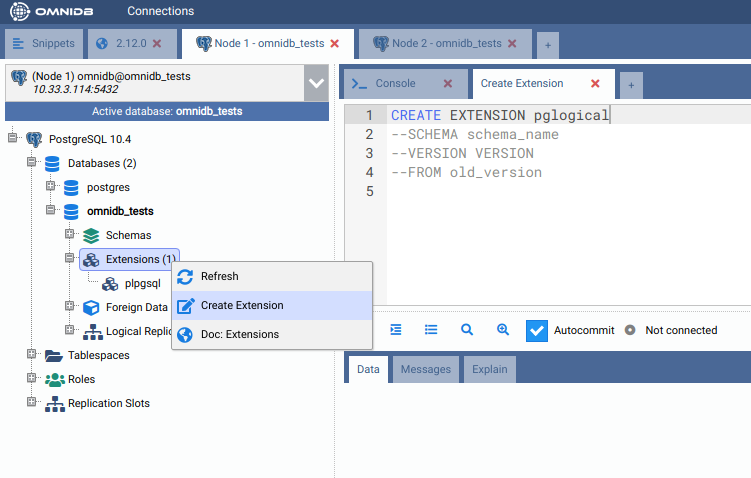
After you have created the extension, you need to refresh the root node of the treeview, by right-clicking on it and choosing Refresh. Then you will see that OmniDB already acknowledges the existence of pglogical in this database. However, pglogical is not active yet.
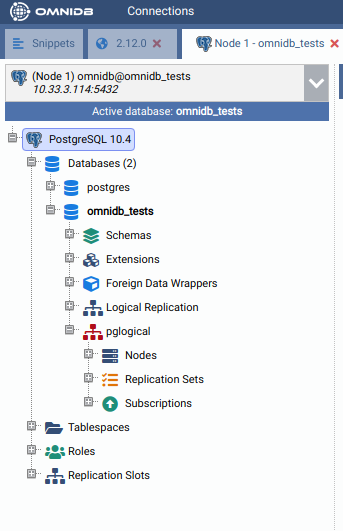
Create pglogical nodes
To activate pglogical in this database, we need to create a pglogical node on each machine. Inside the pglogical node of the treeview, right click Nodes, then choose Create Node. In the SQL template that will open, adjust the node name and the DSN and run the command.
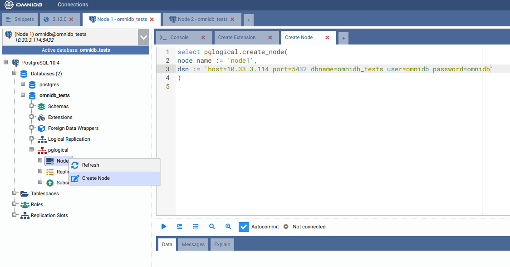
Then right click Nodes again, but this time choose Refresh. You will see the node you just created. Note how OmniDB understands that this node is local. Expand the local node to see its interface inside. You can manage the interfaces of the nodes using OmniDB too.
Go ahead and expand the Replication Sets node. You can see pglogical default replication sets are already created: ddl_sql, default and default_insert_only. You can also manage replication sets using OmniDB.
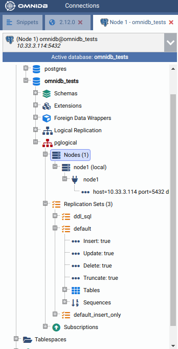
Now create a node on the other machine too. Choose a different name for the node.
Create a table on the first machine
In the first machine, under the Schemas node, expand the public node, then right-click the Tables node and choose Create Table. In the form tab that will open, give the new table a name and some columns. Also add a primary key in the Constraints tab. When done, click in the Save Changes button.
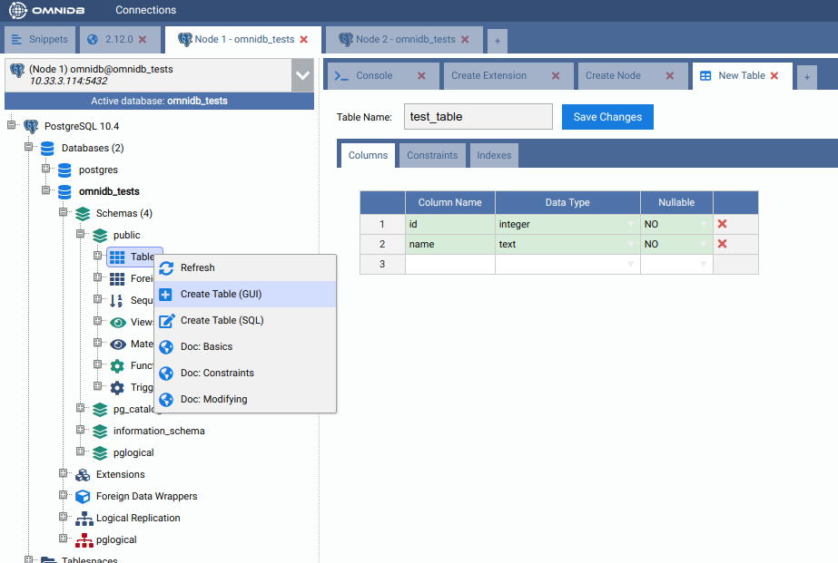
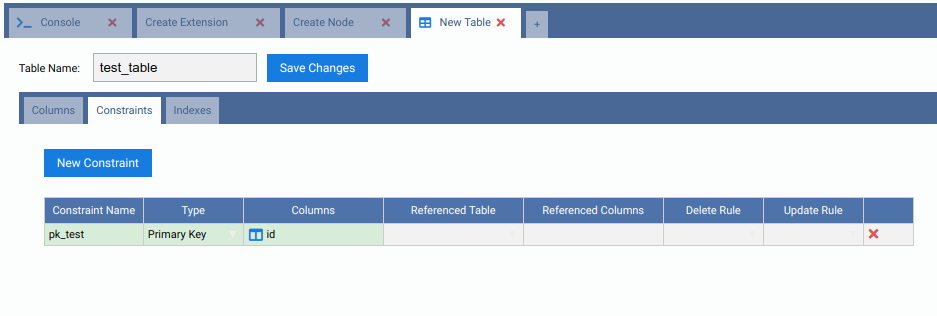
Add the new table to a replication set on the first machine
In the first machine, under the default_insert_only replication set, right click the Tables node and choose Add Table. In the SQL template tab that will open, change the table name in the relation argument and then execute the command.
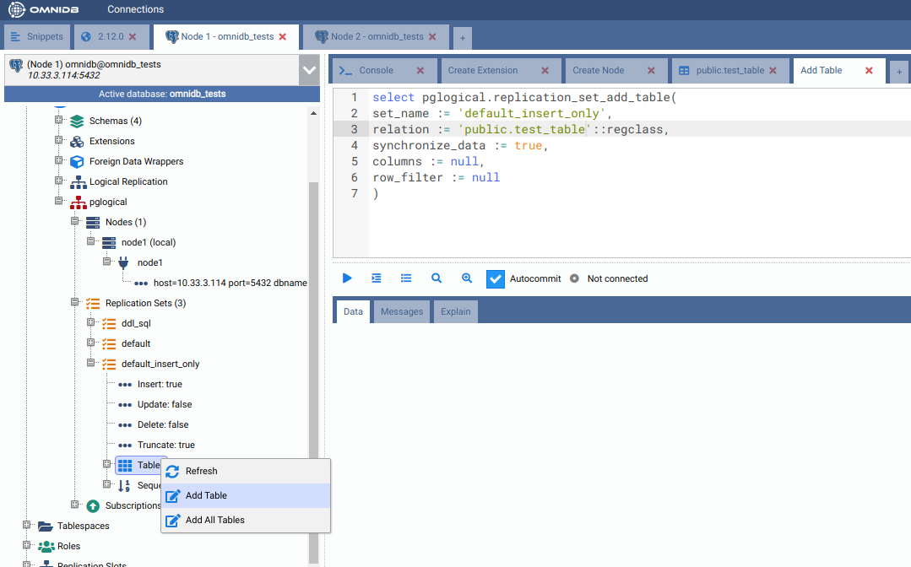
Refresh the Tables node to check the table was added to the replication set.
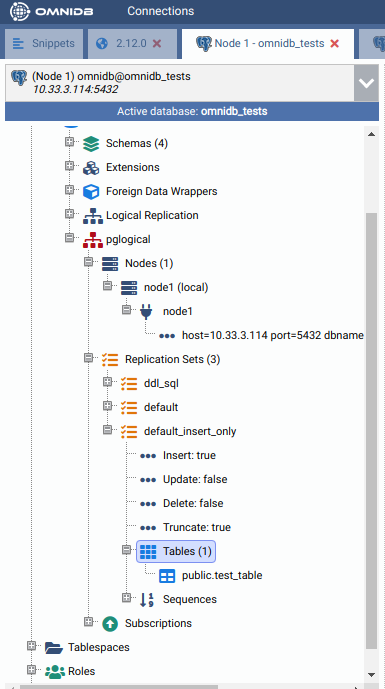
Add a subscription on the second machine
In the second machine, right-click the Subscriptions node and choose Create Subscription. In the SQL template tab that will open, change DSN of the first machine and then execute the command.
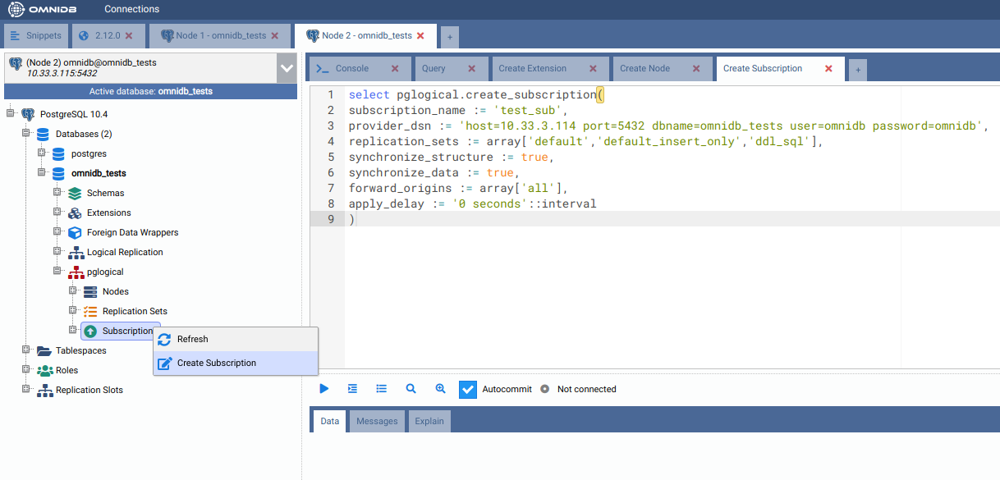
Refresh and expand both Nodes and Subscriptions nodes of the treeview. Note how now the second machine knows about the first machine. Also check the information OmniDB shows about the subscription we just created.
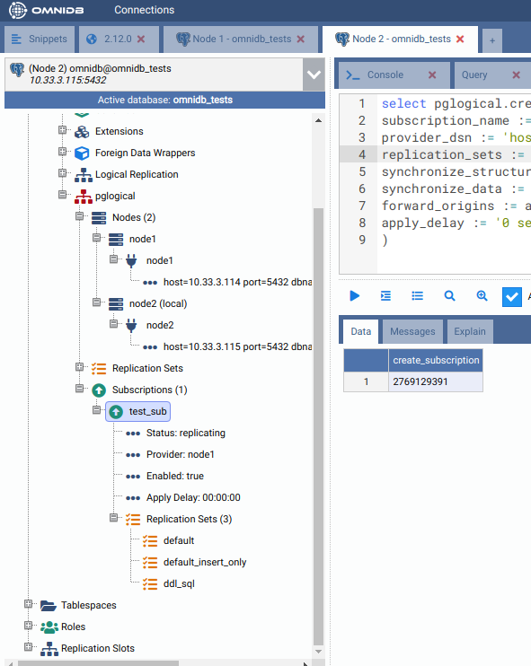
Also verify that the table public.test_table was created automatically in the second machine:
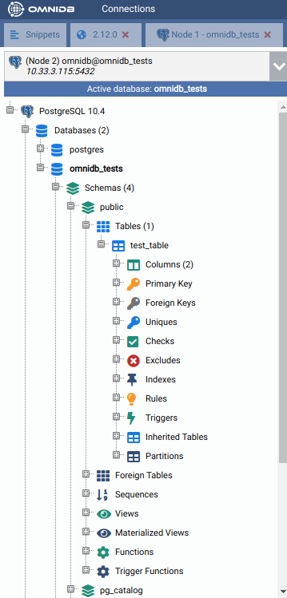
Add some data in the table on the first machine
In the first machine, under the Schemas node, expand the public node and the Tables node. Right-click in our table, test_table, move the mouse pointer to Data Actions and then click on Edit Data. Insert some data to the table. When finished, click on the Save Changes button.
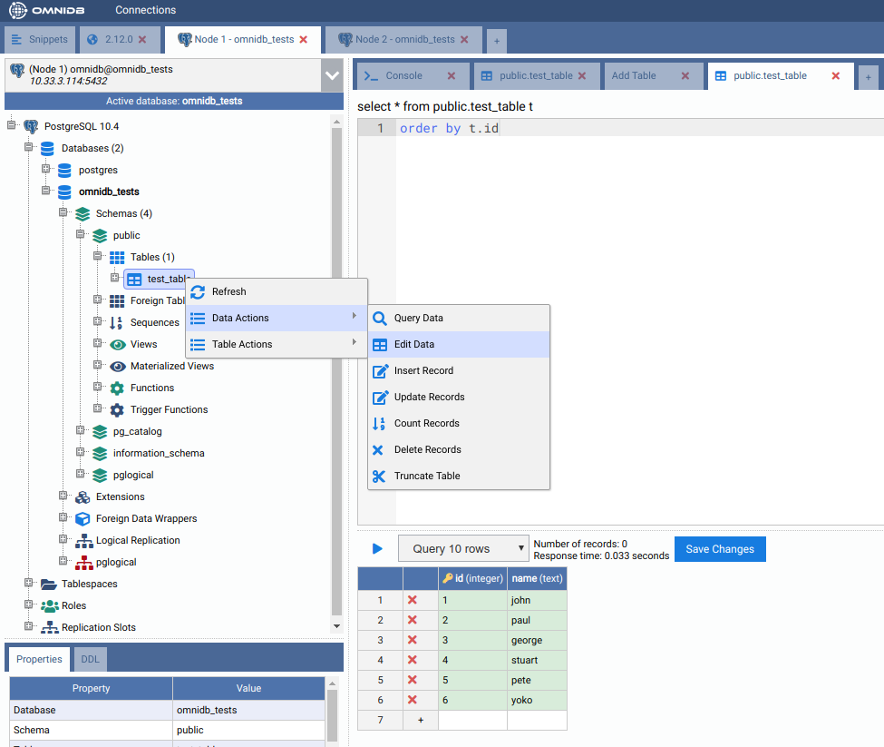
Now let us check the data was replicated. Go to the second machine and right-click the table, move the mouse pointer to Data Actions and then click on Query Data.
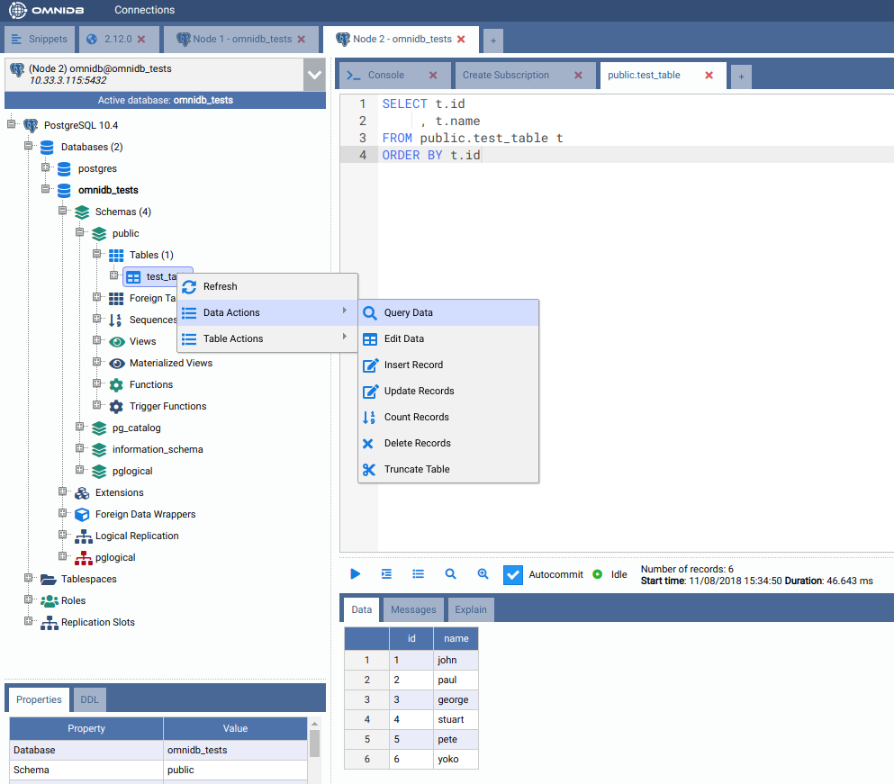
Check if delete is being replicated
In the Edit Data tab in the first machine, remove Pete and Stuart. Click on the button Save Changes when done.
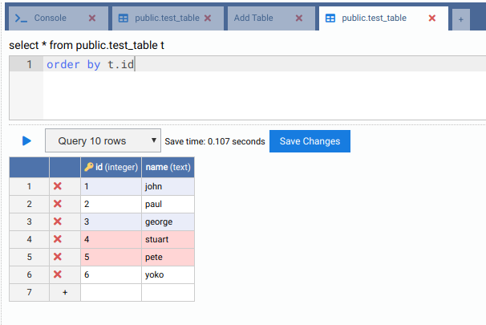
Check if these 2 rows were deleted in the second machine.
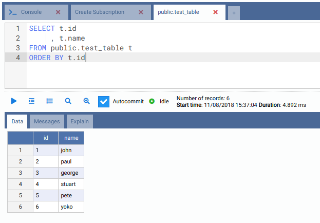
They were not removed in the second machine because the table public.test_table is in the replication set default_insert_only, that does not replicate updates and deletes.